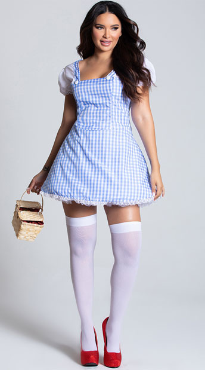

But for all of its similarities to the Disney film, MGM’s version was more of an anti-fairy tale than a fairy tale. Just look at the trio of frightened and feeble misfits that accompanies its heroine along the yellow brick road. None of them is what you’d call a handsome prince. In the clanking of the Tin Man’s rusty limbs, you can hear echoes of Don Quixote’s home-made armour.
The Wizard of Oz is a 1939 American musical fantasy film produced by Metro-Goldwyn-Mayer. Often seen as one of the greatest films of all time,[5] it is the most commercially successful adaptation of L. Frank Baum's 1900 children's fantasy novel The Wonderful Wizard of Oz.[6] Directed primarily by Victor Fleming (who left the production to take over the troubled Gone with the Wind), the film stars Judy Garland as Dorothy Gale alongside Frank Morgan, Ray Bolger, Jack Haley, Bert Lahr, and Margaret Hamilton. Characterized by its use of Technicolor, fantasy storytelling, musical score, and memorable characters, the film has become an American pop culture icon. It was nominated for six Academy Awards, including Best Picture, but lost to Gone with the Wind, also directed by Fleming. It did win in two other categories: Best Original Song for "Over the Rainbow" and Best Original Score by Herbert Stothart. While the film was considered a critical success upon release in August 1939 and was sufficiently popular at the box office, it failed to make a profit for MGM until the 1949 re-release, earning only $3,017,000 on a $2,777,000 budget, not including promotional costs, which made it MGM's most expensive production at that time.[3][7][8]
>Friends of Oz
Dorothy
But for all of its similarities to the Disney film, MGM’s version was more of an anti-fairy tale than a fairy tale. Just look at the trio of frightened and feeble misfits that accompanies its heroine along the yellow brick road. None of them is what you’d call a handsome prince. In the clanking of the Tin Man’s rusty limbs, you can hear echoes of Don Quixote’s home-made armour.
Dorothy
But for all of its similarities to the Disney film, MGM’s version was more of an anti-fairy tale than a fairy tale. Just look at the trio of frightened and feeble misfits that accompanies its heroine along the yellow brick road. None of them is what you’d call a handsome prince. In the clanking of the Tin Man’s rusty limbs, you can hear echoes of Don Quixote’s home-made armour.